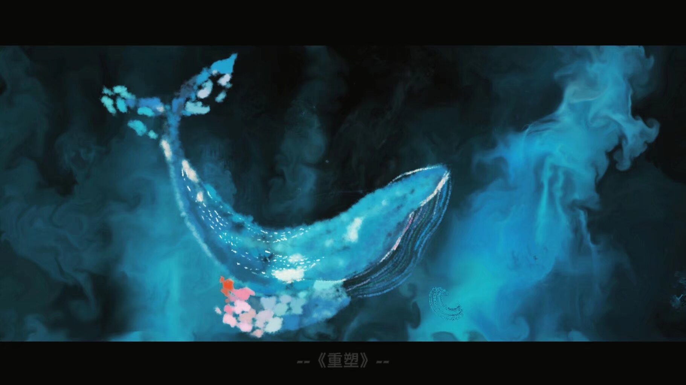
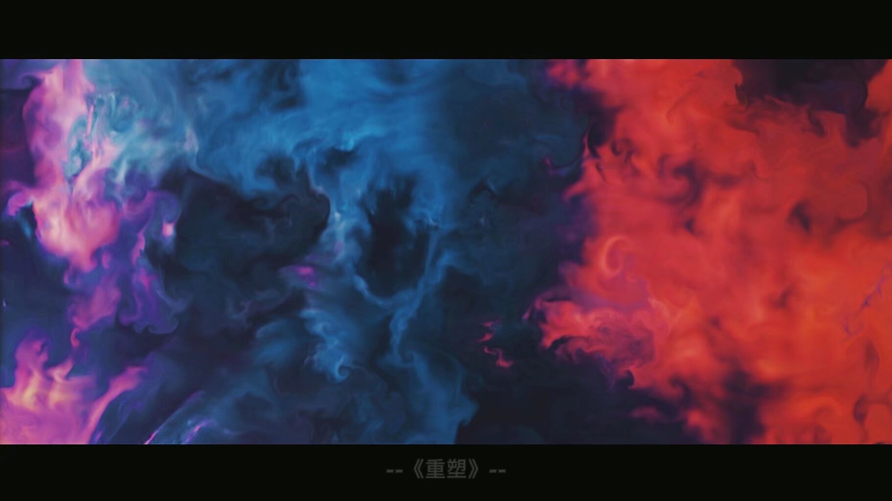
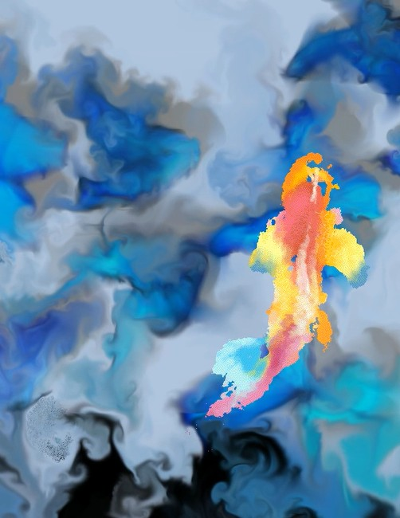
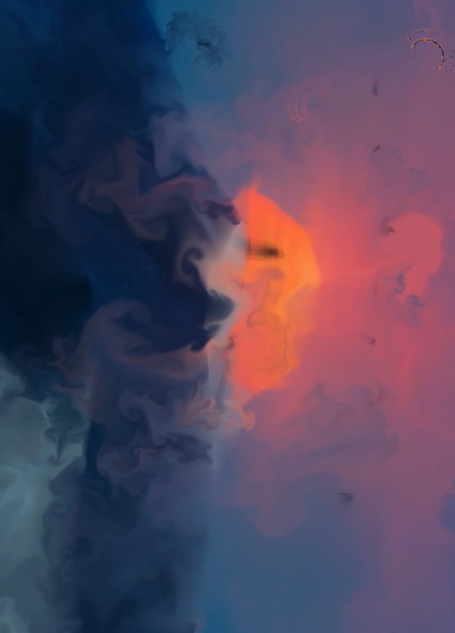
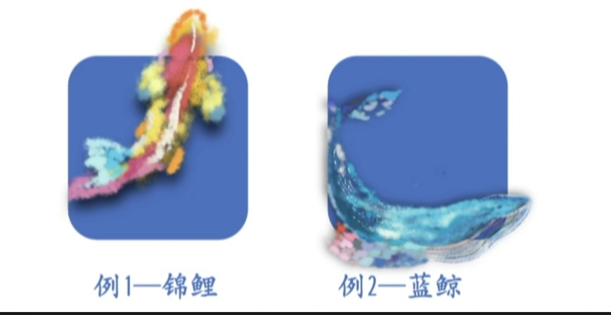

玩，是最好的语言
没有问卷、没有量表。孩子只需要做一件他已经会做的事：伸手、挥手、碰一条鱼。
处在抑郁与自闭风险中的孩子，往往不会说「我很难过」或「我不懂你们」。他们用身体说话：回避、迟疑、重复、或突然的专注。这个项目想给医院一双更温和的眼睛——让孩子在玩耍里，自然地把这些信号交出来。
没有问卷、没有量表。孩子只需要做一件他已经会做的事：伸手、挥手、碰一条鱼。
反应快不快、探索多不多、停顿在哪里，比「他自己怎么说」更接近真实。
一端是孩子在展厅里的游戏，另一端是医生在诊室里的数据。
整套装置只有一个触发器：一个孩子站到屏幕前。从「无人」到「激活」，系统在四步之内完成苏醒——检测到人 → 扫描身体 → 锁定手掌 → 唤醒整片海。
摄像头把每一帧变成一张「运动地图」。稠密光流算出每个像素往哪动、动多快，运动最显著的区域被判定为手；人形检测负责判断「有人来了」。于是，挥手有了方向，停留有了位置。
Farneback 光流在降采样图上计算逐像素运动矢量，挥手的方向与速度由此得出。
对「动得明显」的区域做连通聚类，取面积最大的块作为手，滤掉噪点。
640×480 归一化后映射到 1920×1080，并做 X 轴镜像：抬哪只手，屏幕同侧就有反应。
手部区域光流幅值超过阈值即判定挥手，方向往复进一步过滤误检。
鱼不是会动的贴图。它们遵循 Boids 集群算法——分离、对齐、聚合，再叠加随机漫游与边界规避。鱼体来自手绘造型与材质预渲染，进入流体后，游动方向会被洋流轻轻带偏。

F-01 正侧视图 · 主造型手绘线稿 · 荧光上色 · 材质预渲染

F-02 俯仰姿态 · 游动帧鱼身扭转 · 尾鳍延展 · 动态捕捉
DwPixelFlow 在 GPU 上运行完整的 2D 流体求解：速度场自平流、压力求解、不可压缩修正、涡度约束。挥手时，手的速度被注入速度场，水被搅动；背景与鱼影作为密度场注入，颜色像真的在水中晕开。所有数据都留在显存里，不回流 CPU。



这是整个装置的心脏。手的焦点与一条鱼重叠的瞬间，鱼进入「崩解」：数千个粒子在鱼体上生成，带着鱼的速度与一次脉冲爆炸力散开；随后被流体接管，像被水冲散的光。生命结束前，粒子重新聚拢，鱼重生。
交互闭环：摄像头光流给出「手的焦点」→ 焦点碰到鱼触发崩解 → 粒子被流体速度场接管 → 数据层记录反应时延与触碰多样性 → 鱼重生。一次完整的「看见—触碰—反馈—记录」。
后台把交互转化为两类信号：反应力——从看见鱼到伸手触碰的延迟、动作的连贯性；创造力——触碰方式的多样性、探索路径的熵值。数据脱敏后上传合作医院，作为儿童抑郁与自闭风险筛查的辅助线索。
伦理与边界：这套系统是筛查的辅助线索，不是诊断结论。所有数据经匿名化与脱敏处理，仅用于帮助医生更早看见「沉默的信号」；它不替医生下判断，也不给任何一个孩子贴标签。
视觉层负责让人相信眼前是一片海；交互层负责让身体成为唯一输入；数据层负责把动作变成可被临床使用的信号。三层彼此解耦，通过事件总线通信，任何一层都可以被替换而不影响其他层。
从摄像头里的身体，到屏幕上的流体，再到医院里的数据——每一层都可以被单独质疑、单独替换。
OpenCV 光流捕捉挥手速度与方向，人形检测判断是否有人；坐标归一化并镜像，观众抬手即同侧响应。
DwPixelFlow 在 GPU 上求解速度场与密度场：平流、压力、不可压缩、涡度约束，数据全程留在显存。
GLSL 点精灵批量绘制，粒子采样速度场并叠加噪声与阻尼，加法混合呈现发光浮游生物。
Boids 的分离、对齐、聚合，叠加随机漫游与边界规避，让鱼群像真的在呼吸。
视觉、流体、粒子、鱼群互不直接调用，只发布与订阅事件，任何一层可独立替换。
反应时延、动作连贯性、触碰多样性与路径熵值被采集、匿名化、脱敏后上传合作医院。
它度量「反应有多快、探索有多多样」，但从不度量「这个孩子是否正常」。抑郁与自闭的风险判断，永远属于医生——这套系统只负责把观察到的行为，安静地送到医生面前。
当一个孩子的动作被翻译成数据，诊室里便多了一双看得见「沉默信号」的眼睛。每一个孩子，都值得被更早地看见。
让筛查不再是问卷，
而是一场没有人害怕的游戏。